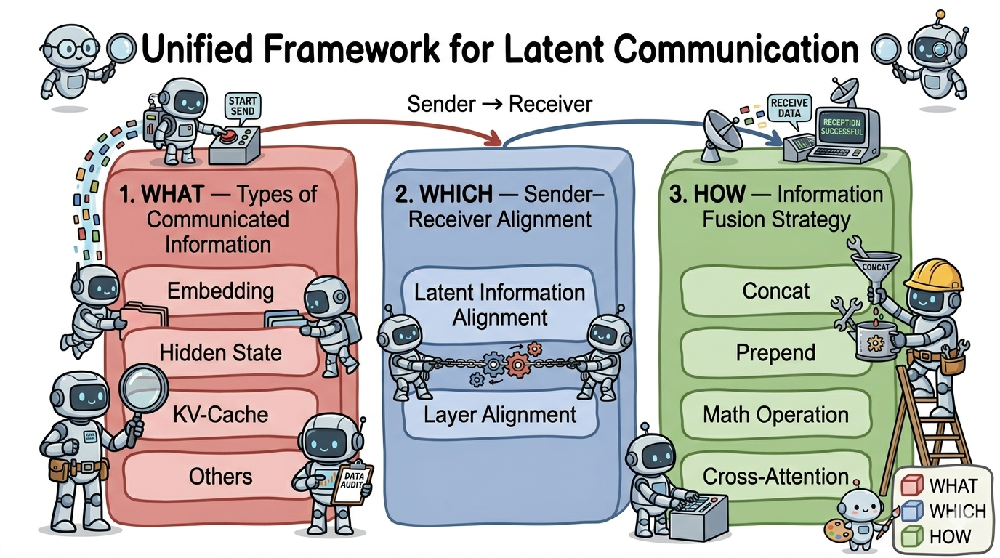

Why it matters왜 중요한가
The argument for latent communication is one number: sampling a token throws away roughly three to four orders of magnitude of what the sender actually knew.
잠재 통신을 정당화하는 근거는 숫자 하나다. 토큰 하나를 샘플링하는 순간, 송신자가 실제로 알고 있던 것의 약 3~4자릿수가 버려진다.
The paper makes the case tightly. A sender's hidden state lives in ℝd with d ≥ 4096 in fp32, so its raw capacity is on the order of 40,000 bits. The token it gets compressed into carries at most log₂|V| ≈ 15–17 bits. What is discarded is not noise: it is the alternatives the sender considered, their relative probabilities, its calibrated uncertainty, and which parts of the context it was actually attending to. On top of that, the receiver has to spend a full prefill re-encoding a message the sender just spent a full decode producing — so text costs roughly 2× the message's generation cost before either agent does any reasoning of its own. Latent communication deletes both halves of that round trip.
논지는 촘촘하다. 송신자의 히든 스테이트는 d ≥ 4096의 fp32 벡터이므로 원시 표현 용량이 약 40,000비트다. 그것이 압축되어 들어가는 토큰 하나는 많아야 log₂|V| ≈ 15~17비트를 담는다. 버려지는 것은 잡음이 아니다. 송신자가 고려했던 대안들, 그 상대 확률, 보정된 불확실성, 그리고 문맥의 어느 부분에 실제로 주의를 두고 있었는지가 함께 사라진다. 게다가 수신자는 송신자가 방금 디코딩으로 만들어낸 메시지를 프리필로 다시 인코딩해야 한다. 즉 텍스트 채널은 두 에이전트가 자기 추론을 시작하기도 전에 메시지 생성 비용의 약 2배를 쓴다. 잠재 통신은 이 왕복의 양쪽을 모두 지운다.
Where the survey earns its keep is not that argument — it is already folklore — but the observation that the field has no shared vocabulary for it. One paper says it transmits "activations," another "hidden states," a third "thoughts," and all three may mean different tensors at different depths fused in different ways. The 3-axis framework is a naming convention, and naming conventions are how a scattered literature becomes comparable.
이 서베이의 값어치는 그 논증 자체(이미 상식에 가깝다)가 아니라, 이 분야에 공통 어휘가 없다는 관찰에 있다. 어떤 논문은 "activation"을 보낸다고 하고, 다른 논문은 "hidden state", 또 다른 논문은 "thought"라고 하는데, 셋이 서로 다른 깊이의 서로 다른 텐서를 서로 다른 방식으로 융합하는 것일 수 있다. 3축 프레임워크는 명명 규약이고, 흩어진 문헌이 비교 가능해지는 것은 바로 명명 규약을 통해서다.

By the numbers핵심 숫자
Ten methods, placed방법 10개, 좌표에 찍어보면
| Method | WHAT | WHICH | HOW | Training-free |
|---|---|---|---|---|
| CIPHER | Weighted embedding | Last → First | Concat | ✓ |
| AC | Hidden state (sel. layer) | Sel. → Sel. | Math (add) | ✓ |
| Interlat | Hidden state (last layer) | Last → First (+proj.) | Concat | mostly |
| SDE | State-delta trajectory | All → Corr. | Math (add) | ✓ |
| Mixture of Thoughts | Hidden state (projected) | Learned interaction | Cross-attention | — |
| KVComm | KV-cache (sel. layers) | Sel. → Sel. | Prepend | ✓ |
| Cache-to-Cache | KV-cache (all layers) | All → Corr. | Math (learned fuser) | — |
| LatentMAS | KV-cache (prefill+decode) | All → Corr. | Prepend | ✓ |
| LRAgent | KV-cache (base + low-rank) | Same backbone | Add (fused kernel) | ✓ |
| Vision Wormhole | Hidden state (via UVC) | Hub-and-spoke | Visual injection | — |
The three axes세 개의 축
WHAT — what you ship
Embedding, hidden state, KV-cache, or something exotic (state deltas, a disk-persistent Q4 cache, a shared workspace, or a hidden state rendered into a VLM's visual input). The survey's sharpest single observation is that these three rank identically on three different scales: KV-cache > hidden state > embedding for information richness, and for transport cost, and for architecture lock-in. There is no free lunch on this axis — a 4096-d Llama cache cannot be poured into a 5120-d Qwen.
임베딩, 히든 스테이트, KV 캐시, 아니면 좀 특이한 것들(상태 델타, 디스크에 상주하는 Q4 캐시, 공유 워크스페이스, VLM의 시각 입력 공간으로 렌더링된 히든 스테이트). 이 서베이의 가장 날카로운 관찰 하나는, 이 셋의 순위가 서로 다른 세 척도에서 동일하다는 것이다. 정보 풍부도도, 전송 비용도, 아키텍처 종속성도 모두 KV 캐시 > 히든 스테이트 > 임베딩 순이다. 이 축에 공짜 점심은 없다. 4096차원 Llama 캐시를 5120차원 Qwen에 그대로 부을 수는 없다.
WHICH — what lines up with what
Two sub-questions. First, do the two latent spaces match? If both agents are the same checkpoint, alignment is free; different fine-tunes of one backbone need a learned projection; genuinely different architectures need a universal codec or learned interaction layers. Second, which layer feeds which? The recurring patterns are last → first (simple, works when the last layer is the semantic summary), all → corresponding (the default for KV-cache methods, preserves layer structure), and selected → selected (more complexity, pays off when the signal is concentrated in a few layers).
두 개의 하위 질문이다. 첫째, 두 잠재공간이 맞는가? 두 에이전트가 같은 체크포인트면 정렬은 공짜다. 같은 백본의 서로 다른 파인튜닝이면 학습형 사영이 필요하고, 진짜로 다른 아키텍처면 범용 코덱이나 학습형 상호작용 레이어가 필요하다. 둘째, 어느 레이어가 어느 레이어로 들어가는가? 반복되는 패턴은 last → first(단순하고, 마지막 레이어가 의미 요약일 때 잘 작동), all → corresponding(KV 캐시 방법의 기본값, 레이어 구조를 보존), selected → selected(복잡도는 늘지만 신호가 몇몇 레이어에 몰려 있을 때 이득)이다.
HOW — how the receiver absorbs it
Five options, ordered by expressiveness against cost. Concatenation and prepending dominate because they are training-free — prepending in particular lets the receiver attend over the sender's context as if it were the opening tokens of its own prompt. Math ops (addition, gating, a learned fuser) are more expressive but need compatible geometry. Cross-attention is the most expressive and always needs training. Cache restoration — just overwrite part of your own cache — is the cheapest of all, but it is a recomputation-avoidance trick, not a way to mix two agents' reasoning.
표현력 대 비용 순으로 다섯 가지다. Concat과 prepend가 지배적인데 무학습이기 때문이다. 특히 prepend는 수신자가 송신자의 문맥을 마치 자기 프롬프트의 앞부분인 것처럼 어텐션할 수 있게 해준다. 수식 연산(덧셈, 게이팅, 학습형 fuser)은 표현력이 더 높지만 기하학적 호환성이 필요하다. 교차 어텐션은 가장 표현력이 높고 항상 학습이 필요하다. 캐시 복원(자기 캐시 일부를 그냥 덮어쓰기)은 가장 저렴하지만, 두 에이전트의 추론을 섞는 방법이 아니라 재계산 회피 기법이다.
How to use the framework이 프레임워크를 쓰는 법
- Ask what leaves the sender.송신자에서 무엇이 나가는지 묻는다.Not "activations" — which tensor, at which depth, from which phase? KV-cache methods live in prefill (the cache is a prefill by-product), embedding and hidden-state methods live in decode (the last-token state is what predicts the next token). The phase choice is the whole ballgame: if the receiver only needs prefill-phase state, the sender's decode can be skipped outright."activation"이라는 말로는 부족하다. 어느 텐서를, 어느 깊이에서, 어느 단계에서 꺼내는가? KV 캐시 방법은 프리필에 산다(캐시가 프리필의 부산물이므로). 임베딩·히든 스테이트 방법은 디코드에 산다(마지막 토큰 상태가 다음 토큰을 예측하므로). 이 단계 선택이 승부처다. 수신자가 프리필 단계 상태만 필요로 한다면, 송신자의 디코드 자체를 통째로 건너뛸 수 있다.
- Ask whether the two spaces even match.두 공간이 애초에 맞는지 묻는다.Same checkpoint → nothing to do. Same backbone, different fine-tunes → a small learned projection. Different architectures → you are in the research frontier, and you will be training something. This is where most of the 18 methods quietly restrict their scope.같은 체크포인트면 할 일이 없다. 같은 백본의 다른 파인튜닝이면 작은 학습형 사영이면 된다. 다른 아키텍처면 연구 최전선이고, 무언가를 반드시 학습시켜야 한다. 18개 방법 대부분이 조용히 범위를 좁히는 지점이 바로 여기다.
- Ask where it lands inside the receiver.수신자 안에서 어디에 꽂히는지 묻는다.Layer-to-layer mapping first (last → first, all → corresponding, or a selected subset), then the fusion operator. Fixing the mapping usually fixes the operator: all → corresponding on a KV-cache almost forces prepending or a per-layer fuser.먼저 레이어 대응(last → first, all → corresponding, 혹은 선택된 부분집합)을 정하고, 그다음 융합 연산자를 정한다. 보통 대응을 정하면 연산자는 따라온다. KV 캐시에 all → corresponding을 쓰면 사실상 prepend나 레이어별 fuser로 강제된다.
- Then read the coordinate off against your constraint.그다음 자신의 제약 조건에 대고 좌표를 읽는다.v3 adds a section turning the taxonomy into design rules, and this is the part worth stealing: long shared context on one backbone → transfer the KV-cache; heterogeneous backbones → projected hidden states or a shared codec; tight bandwidth → compress before transport; strict auditability → don't go fully latent, use a hybrid text-latent channel.v3는 분류를 설계 규칙으로 바꾸는 절을 추가했는데, 훔쳐갈 만한 부분이 바로 여기다. 같은 백본에 긴 공유 문맥이면 → KV 캐시 전송, 이종 백본이면 → 사영된 히든 스테이트나 공유 코덱, 대역폭이 빠듯하면 → 전송 전 압축, 감사 요구가 엄격하면 → 완전 잠재로 가지 말고 텍스트-잠재 혼합 채널.
What to take away그래서, 가져갈 것
KV-cache has quietly become the default channel — 9 of the 18 methods, and rising. The reason is infrastructural rather than scientific: the cache was already a first-class optimisation target with mature compression, sharing, and offload tooling, so latent-communication methods get to piggy-back on someone else's engineering.
KV 캐시가 어느새 기본 채널이 되었다 — 18개 중 9개, 그리고 늘고 있다. 이유는 과학적이기보다 인프라적이다. 캐시는 이미 압축·공유·오프로드 도구가 성숙한 일급 최적화 대상이었기 때문에, 잠재 통신 방법들이 남이 해둔 엔지니어링에 무임승차할 수 있다.
The homogeneity assumption is the field's load-bearing wall. 13 of 18 methods are training-free, and they are training-free almost entirely because they assume sender and receiver are the same model. The moment you drop that assumption — Vision Wormhole, Mixture of Thoughts — you are training an alignment module. A training-free, O(N) cross-architecture channel does not exist yet, and it is the single most valuable open problem here.
동질성 가정이 이 분야의 내력벽이다. 18개 중 13개가 무학습인데, 그게 가능한 이유는 거의 전적으로 송·수신자를 같은 모델로 가정하기 때문이다. 그 가정을 놓는 순간(Vision Wormhole, Mixture of Thoughts) 정렬 모듈을 학습시키게 된다. 무학습이면서 O(N)인 이종 아키텍처 채널은 아직 없고, 여기서 가장 값진 열린 문제다.
Nobody is guarding the latent channel. The survey flags this as a critical gap and it is right: a hidden state carries no text to inspect, so an adversarial sender could embed a perturbation that leaves the receiver's output reading fine while steering its behaviour — and a compromised receiver exfiltrates the sender's full context in one tensor. Every property that makes the channel efficient also makes it unauditable.
잠재 채널을 지키는 사람이 아무도 없다. 서베이는 이를 치명적 공백으로 지목하는데, 타당하다. 히든 스테이트에는 검사할 텍스트가 없으므로, 적대적 송신자는 수신자의 출력이 읽기에는 멀쩡하면서 행동은 조종되도록 하는 섭동을 심을 수 있다. 반대로 침해된 수신자는 송신자의 전체 문맥을 텐서 하나로 통째로 유출한다. 이 채널을 효율적으로 만드는 모든 성질이 동시에 감사 불가능하게 만든다.